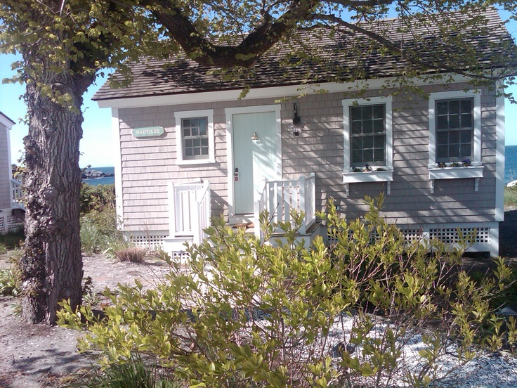

.png)
.PNG)
.PNG)
.PNG)
.PNG)
.PNG)
.JPG)
.JPG)
.PNG)
.PNG)


Sometimes I can really confuse myself…like earlier this summer…
One of the very sweet readers here wrote to tell me about her dreamy trip to New England. Â She said one of the highlights of her vacation was sitting outside Castle Hill Inn in Newport and watching the sailboats go by.
You need to do a post on the beach cottages there, she told me.
And I said, Oh yes! Â I am already planning on writing about them later this summer. Â
source
You see, I had previously researched the inn, and I had researched the architectural firm of Carpenter and MacNeille where I learned they had renovated The Inn at Castle Hill.  That is where I got confused.  The names are sooo similar, I thought they were the same inn…but no…The Inn at Castle Hill is in Ipswich, Massachusetts, and Castle Hill Inn is in Rhode Island.  Got that straight?  Today we are taking a look at the Rhode Island inn. 🙂
Before we look at the precious beach cottages, I want you to know about the inn itself.
Castle Hill Inn was once the home of Alexander Emmanuel Agassiz. Â He was born in Switzerland, came to the United States with his father, had a great interest in biology, (especially marine biology) Â and studied at Harvard. Â (His father founded the museum of natural history at Harvard.) Â Alexander became well known around the world for his work as a scientist. Â Through a friend of his sister’s husband, he became interested in the copper mines in Calumet, Michigan and eventually made his fortune through them. In 1874, he and his brother-in-law had summer homes built in Maine and shipped to Newport. Â (Can you imagine shipping houses of that size??) They were sited on a peninsula along Narragansett Bay, and the Agassiz family moved in during the summer of 1875. Â Unfortunately, his sister and brother-in-law’s home burned to the ground in 1880 before anyone even lived in it.
In 1890, Mr. Agassiz deeded a portion of his property on the bay to the U.S. Government, (for $1) and the Castle Hill Lighthouse was built there.
The Agassiz summer home served as a base and officer’s quarters during World War II, and then later it was used as a summer hotel.  In the 1950’s Grace Kelly loved a portion of the rocky shore so much that it became known as Grace Kelly Beach. (They even built the wooden steps that lead down to the beach for her. 🙂 )

In 2003, a major restoration project was undertaken with Northeast Collaborative Architects. Â Siding, chimneys, and windows were replaced. Â Much of the first floor was reconfigured. Â A new copper roof was added, and the tower was replicated.
So now that you have had your history lesson, let’s take a look inside the beautifully renovated inn. 🙂
The lobby area seems dark and masculine.  (Don’t go thinking the whole place is like this…you are going to be surprised. 🙂 )
Here is one of the four dining rooms with wonderful views of the water.
The terrace dining area…
You can even be served while relaxing in one of their waterfront adirondack chairs.
Would you like to see some of the rooms in which you can stay? (You’re thinking …Finally… aren’t you?) Alright. Long long ago I came across a photo of their Turret Room.  I was smitten with it…thinking it to be the most romantic room I had ever seen.  In fact it was what led me to my researching the inn. Yes, it is dark, but I would call it tall, dark, and handsome. 🙂
It is a two level suite, and the second level sitting room has amazing 320 degree views of the water.
There are eight other rooms in the main inn including the Mrs. Agassiz Room which was renovated in 2011.
And there is more. Â If you follow a path from the inn towards the harbor, you will come upon the Harbor Houses.
These overlook the area of the rocky shore where Grace Kelly loved to swim. Here is a look inside one of the houses.
And there is more.
There are beach houses about 250 yards from the main inn as well…
with these incredible views.
Of course, I saved my very favorite for last…the Beach Cottages.
These rooms do not have one speck of darkness in them.  They are light, bright, and fresh. 🙂
The walls make them look rustic to me, but they are anything but rustic. Â You will find a variety of amenities (which vary from cottage to cottage) including fireplaces, heated floors, and whirlpool tubs.
So do you have a favorite? These are obviously not accomodations for staying within a budget. Â Any of these luxury spaces would have to be for a major celebration trip for us to even consider..but who knows? Â Maybe one day we will be celebrating something big sitting in that green rattan chair up there looking out at the Atlantic.
I hope your weekend is a good one…whether you are celebrating something big or just relaxing at home. 🙂
Until next time…


.PNG)
This place would be perfect for a honeymoon or Anniversary getaway! Hope you enjoy your class this year!
i’m just now finding this post kelly and i have to apologize for not being able to thoroughly read it this morning….i want to go back and devour it when i have a chance but when i saw it i planned on telling you about eugenia price’s books but i see you already know about them….my mom discovered them years ago and we all got hooked on the stories…she and her friends made several trips to the island and it’s on my bucket list….in fact this might have to be our next “big” trip.
we moved my mom into a nursing home this past week and i’m waiting on my sister and BIL to get here this morning so we can move her things out of the assisted living cottage into storage….a very stressful time but i’m confident god has already gone before us to make the way as painless as possible…i’ve already seen his hand in this.
have a wonderful week!
This place looks amazing. I am so wanting to make a trip out East!!
What’s that saying? If walls could talk! I would love to hear the stories those wall could tell. I love “tall, dark and handsome.” That was great. Oh, to stay at such a place. As long as I can sit on the beach, I don’t care if I have to camp to do it. And I have! Hope your school year is off to a good start. Before you know it, you will be on the countdown to the last day. 😉
I am adding Castle Hill Inn to my bucket list of places to stay…what an absolutely gorgeous view…I could sit out on those adirondack chairs all day!…Thanks for the “history lesson” on the Inn….
———————————————————————
I hope you DO get to visit it one day Shirley. (Pack me in your bags when you go please!) I wouldn’t mind sitting on those chairs either…coffee cup in hand just watching the boats sail by. ah..life is good. 🙂
Have a great week!
Kelly
Hi Kelly – The Castle Hill Inn is so beautiful. I wish that it was within my budget – my husband and I are looking for a place for a quick getaway in the next couple of weeks. Alas, it is not to be 🙠This Inn reminds me of the Ocean House, which I think is nearby. This would be another property for you to feature! http://www.oceanhouseri.com/
Megan
————————————————————————-
Oh I do wish it was within your budget Megan because I know it would be such a great place to stay. Thank you for the information on the Ocean House inn. I will be sure to check them out!
Hope you have had a wonderful weekend.
Kelly
Just got home from the Cape and read this post, now you’re really in my neck of the woods. We try to go for lunch here, once every summer. The property is as spectacular in person as it appears in the pictures. But, the view of Newport harbor from the Adirondack chairs on the lawn – simply breathtaking! Thanks for the history lesson, I really didn’t know much about the inn’s background. If you’re coming to the Ocean State you really need to spend a day in Newport and, in my opinion, add a sidetrip to Watch Hill. Hope you all can visit us real soon. (And, because we’re so small you can easily get to other New England attractions.)
——————————————————————–
If Castle Hill Inn is in your neck of the woods, you live in a beautiful place Paula! I would do like you and go for lunch there every summer. How fun! I have been trying to get my sons to move to New England, but they are now moving to Seattle, so I imagine we will be traveling to the West Coast more than getting up to your area. 🙁
I’m so glad you liked the history lesson on the inn.
Kelly
Hi Kelly! Jimmy and I stayed at Castle Hill (the RI version! :)) to celebrate our 15 year wedding anniversary. it was an idyllic location and our room was absolutely gorgeous. the bathroom was a stunner too. i didn’t know the whole history! such a great post!! the food there was pretty amazing too!! xo, tessa
———————————————————————-
What a wonderful place to celebrate an anniversary! Our anniversary is today, but we are at home looking for apartments in Seattle for our sons. I know you had to love Castle Hill Inn! Glad I was able to share the history of the place with you.:)
Kelly
I stopped by to wish you a happy birthday and a happy anniversary, and I see Minnie beat me to it! Ha! May it be your best year yet, and may God continue to bless you and your family!
————————————————————————
Wow I am so impressed that you remembered! How sweet of you. 🙂 Thank you for your very sweet wishes Mimi!
Kelly
Happy Birthday to youuuu! Happy Birthday to youuuu! And I believe Happy Anniversary too. August 3rd for BD and Anniversary. Thanks for all the work you do to give us this “magazine”. I love it and you. Thank you.
——————————————————————-
Yes, happy anniversary too. 🙂 Thank you for the birthday and anniversary wishes. I am so glad you enjoy the blog and posts here.
Hope you have had a great weekend!
Kelly
My daughter attends college in Newport. When picking her up at the end of this past semester we stopped @ Castle Hill at dusk. I got the most beautiful shot of the sun on the water with a serene sailboat. perfect spot!! (I’ll try to figure out how to send it to you!!!)(might have to ask my daughter!! 😉 )
—————————————————————–
What a great place to attend college..gosh it would be like being on vacation for school! (Love that idea. 🙂 ) Do send the photo. Just use the Say Hello button at the top of the blog, copy and paste the photo, and hopefully that will work. I’d love to see it!
Kelly
Wow! What a fabulous place to visit! Another place to put on our retirement visit list~
——————————————————————-
It does look fabulous, doesn’t it Susan?! I have put it on our retirement places-to-visit list as well. 🙂
Kelly
My husband and I spent a wonderful week there 2 years ago. It is one of my favorite places.We stayed in one of the Harbor Houses and loved it. They seemed to be a bit more private than the ocean cottages. The food was delicious in the resteraunt and the staff were helpful. There was a sailboat race when we were there and had a great view from the outside bar area. I highly recommend it. Have been reading your blog for a few months and thoroughly enjoy it. Thank you for all the time you put into it and the great house ideas. Jeanie
——————————————————————–
Jeanie, I am soooo very jealous! How wonderful that you have stayed at Castle Hill Inn. I can easily see why it would be one of your favorites. Thank you for telling us about the Harbor Houses. Good information to know. 🙂
I am so glad you are enjoying the blog! Have a great weekend.
Kelly
What a beautiful inn Kelly. Simply grand. How wonderful would it be to dine at sunset in that dining room. Breathtaking I’m sure. I think I would so enjoy one of the cottages over the inn for my sleeping pleasure. That is just me. More private. I would take any of them, though I love the one with the two rockers and umbrella on the deck. I have seen that photo before. With all these shares on inns you been posting Kelly, well, as Robin Leach has his signature saying.. here is to “champagne dreams and caviar wishes”, we need one for Talk of the House. Oh, and I think I need to go buy a lottery ticket now. My “dream” bucket list is growing. Now where is my spare cash for those tickets? I’m off…toodles. Wish me luck.
Debra
————————————————————-
I need to be doing the lottery as well. There are just so many beautiful places to see in our country. I could spend a lifetime traveling from one inn to another! Wouldn’t that be fun?! 🙂
Kelly
Oh Kelly, I knew you would get it right!!! Don’t you just love the setting of this Inn and their beach cottages?! Wish I was back there right now with my two good buddies. Maybe I can save my pennies and actually spend the night there next time I visit instead of just having an afternoon ” tottie”!
I hope you have had an awesome start to the 2014 school year!!!!
——————————————————————-
Katrina this post was for you. 🙂 I knew you would love seeing “your place” again. I would be happy to just dine there, but staying there would definitely be magical. School is off and running…and running is what I have been doing! I hope things will slow down some next week since we won’t be in such a race to have rooms ready. The normal routine should return.
Kelly
Oh WOW…love it all…the main lobby is done to perfection period style…I’d say that Tall, Dark and Handsome room could be the epitome of historical novel sexy…yes I could see my tall dark and handsome husband in it…but my favorite was the cottage bedroom in all the aqua…to me that is a grounded feminine room! Any of it I would love to be at, in and enjoying! very interesting and informing Kelly! thank you I love to armchair travel!!!!!!!!
———————————————————————
I am glad that you love to armchair travel Katherine…so much to see and so little cost to see it! LOL After I do all my research on these places I almost feel like I have been there (but nothing really compares to actually being there I know.) I loved that cottage bedroom. It had the perfect beachy décor to me.
Thank you for reading!
Kelly
Kelly,
These are all lovely pictures. I do love homes, cottages and Inns by the water! Thanks for sharing them with us. My favorite is the Harbor house with the green exterior trim of course.
———————————————————————–
When they painted that trim green, I know they did it just for you Dawn. 🙂 I can’t resist places by the water either. One day I hope we actually have our own little home near the beach. I hope you are having a great weekend!
Kelly
Ahhhh-that would be the perfect place to celebrate something special! Thanks for another lovely post. Hope your first week back at school went well! ~Anne
———————————————————————–
Yes it would Anne! I am glad you liked reading about the inn. Our first week was hectic, full of meetings, but went off fine. It just seems so very early to be back in school. Wish I was on the calendar committee!
Kelly